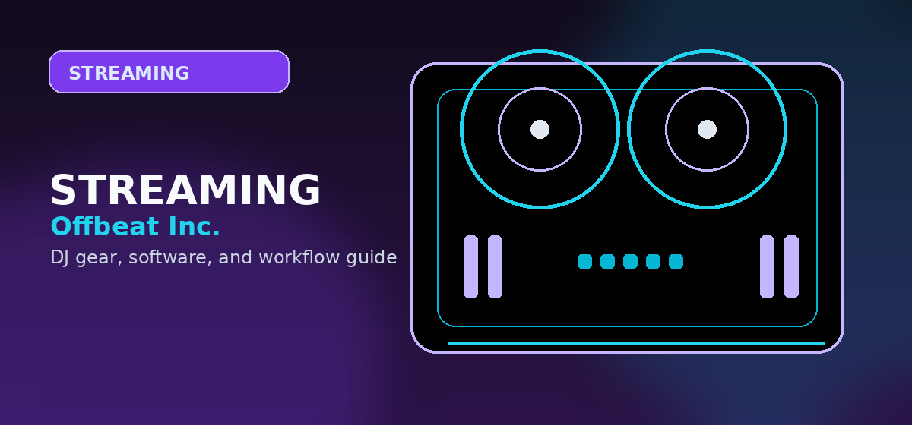

How to DJ with Spotify
A practical guide to DJing with Spotify in 2026: supported apps, Premium requirements, mobile and desktop workflows, hardware support, and the limitations DJs must not ignore.

Disclosure: This page uses affiliate links. We may earn a commission at no extra cost to you. Full disclosure →
A practical guide to DJing with Spotify in 2026: supported apps, Premium requirements, mobile and desktop workflows, hardware support, and the limitations DJs must not ignore.
Yes, Spotify can be used in DJ software again — with limits
The reader should not leave thinking Spotify streaming is the same as owning a DJ library. The practical answer is: Spotify can now work in supported DJ applications and platforms, but users need Spotify Premium, compatible app versions, supported markets, and acceptance of feature restrictions.
| Path | Best for | What works | What to verify |
|---|---|---|---|
| djay + Spotify | Most Spotify-first beginners and casual DJs | Spotify catalog, playlists, Automix-style workflows, supported hardware | Free vs Pro feature differences, Neural Mix/recording/offline restrictions |
| rekordbox + Spotify | AlphaTheta/Pioneer learners who want Spotify practice | Streaming inside the rekordbox ecosystem where supported | Platform, account, region, and controller/app compatibility |
| Serato + Spotify | Open-format Serato users testing requests and playlists | Spotify access in current desktop workflows where supported | Recording, caching, and stem limitations |
| Spotify app mixing features | Consumers making blended playlists | Simple playlist transitions | Not equivalent to real DJ software and hardware control |
Best way to start DJing with Spotify
- Use Spotify Premium. Supported DJ integrations generally require Premium access.
- Choose software first. For most Spotify-first users, start with djay because its Spotify page is clear about cross-platform support and hardware compatibility.
- Confirm your platform. Desktop, iOS, iPadOS, Android, and Windows support can differ by app and version.
- Connect hardware only after software works. Do not buy a controller before confirming your app, account, and device can load Spotify tracks.
- Keep local files for paid events. Use Spotify for practice and discovery, not as the only library for mission-critical gigs.
Spotify feature restrictions DJs must understand
Spotify integration can be useful and legitimate without being feature-complete. Restrictions can include offline mode, lossless playback, recording, stem separation, batch analysis, track recommendations, or hardware features depending on the software. That means the next decision is software choice, not just whether “Spotify DJing works.”
Good Spotify use cases
- Learning transitions at home.
- Casual house parties where internet is reliable.
- Discovering tracks before purchasing or downloading.
- Testing playlist flow and requests.
- Automix-style casual playback.
Bad Spotify-only use cases
- Weddings where specific songs must work.
- Club sets without stable connectivity.
- Recorded promo mixes if recording is blocked.
- Stems routines if the service/app disables stems.
- Any event where account or licensing failure would stop the show.
Best controllers for Spotify DJing
For a Spotify-first beginner, hardware should be cheap and flexible until the user knows their software preference. The DDJ-FLX2 is attractive because it is compact and explicitly positioned around app and streaming workflows, while the FLX4 is the better first serious controller if the you want a stronger physical layout. For djay users, also check Algoriddim’s supported hardware list before buying.
DDJ-FLX2 Review
The easiest AlphaTheta page to route Spotify-curious beginners into hardware.
Open →Buying guideBeginner Controllers
Compare FLX2, FLX4, Hercules, and Numark starter paths.
Open →AlternativeApple Music DJ Software
Compare Spotify and Apple Music before committing to one streaming ecosystem.
Open →Spotify buying guidance
Spotify has unusually strong consumer awareness, so Spotify compatibility often attracts readers who are not yet ready to buy gear. The goal is to convert that curiosity into accurate software and controller decisions. The copy should be strict: Spotify can be useful inside supported DJ apps, but app support, account requirements, device support, service-region availability, and restricted features all matter.
Do not position Spotify as a professional library replacement. A beginner can learn transitions, playlist flow, and basic DJ concepts with Spotify where supported. A paid-event DJ should not rely on Spotify as the only source for must-play songs, clean edits, first dances, or any set where internet, licensing, or account failure would be unacceptable.
A safer Spotify-to-DJ-library workflow
Use Spotify as the front end for discovery, not the only place your DJ set lives. Build playlists, test transitions, and identify crowd-friendly tracks there. Then move the songs that matter into a performance-ready library from downloads, record pools, promos, or another source that fits your usage needs.
For practice, keep a Spotify playlist mirrored with a local crate in your DJ software. For gigs, bring the local crate, not just the streaming playlist. This gives you a fallback if Wi-Fi fails, a track becomes unavailable, a streaming integration changes, or recording is blocked.
A safer Spotify-to-DJ workflow
Use Spotify for listening, playlist discovery, and casual practice where supported. For paid work, rebuild the final set from reliable DJ music sources so the library is not dependent on streaming availability.
- Build rough playlists in Spotify while researching music.
- Buy or source performance-safe versions of the tracks you will actually play.
- Analyze local files in your DJ software, set cue points, and test transitions offline.
- Keep Spotify as a discovery layer, not as the only playable library.
Frequently Asked Questions
Can I DJ with Spotify in 2026?
Yes, Spotify works in supported DJ software workflows again, but support depends on app, platform, account, region, and version.
Do I need Spotify Premium to DJ with Spotify?
Supported DJ software integrations generally require Spotify Premium.
Can I record a DJ mix using Spotify tracks?
Do not assume so. Recording is commonly restricted with streaming tracks; verify inside the specific app before planning a recorded mix.
What should I check before choosing DJ software?
Check controller compatibility, library tools, streaming support, stem features, recording limits, subscription cost, and whether the software matches the venues or hardware you expect to use.
Can I start with free DJ software?
Yes, but free versions often restrict hardware, recording, effects, or advanced library features. Use free software to learn basics, then upgrade when the limitations slow you down.